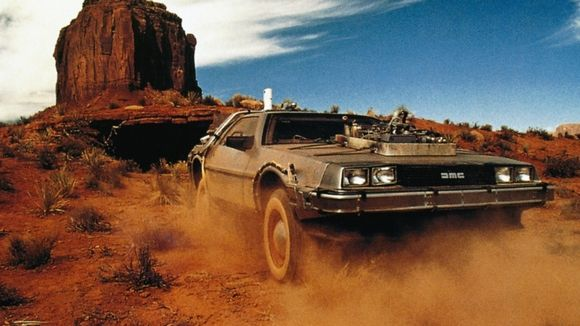
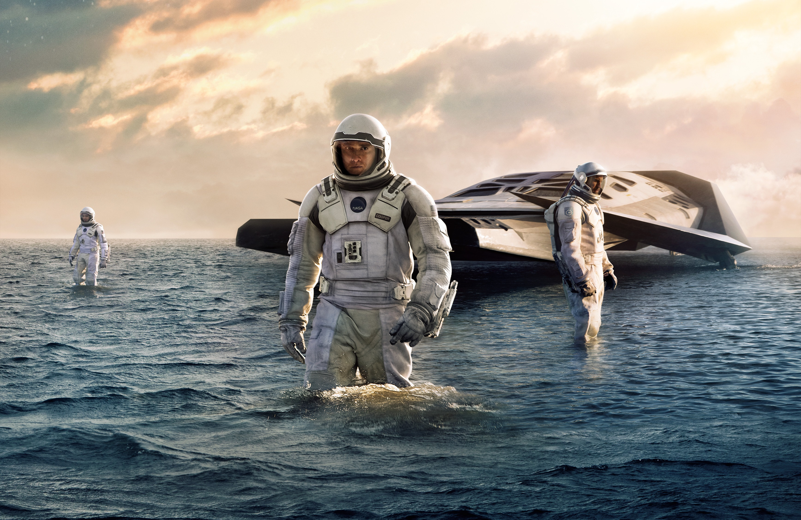
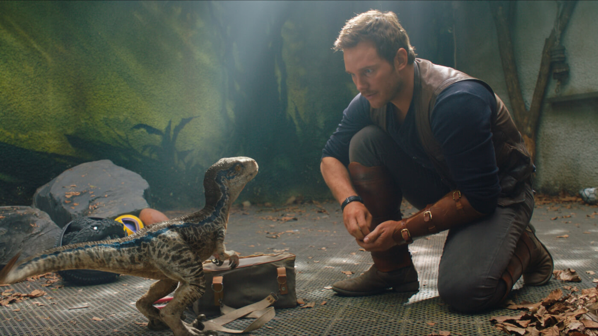
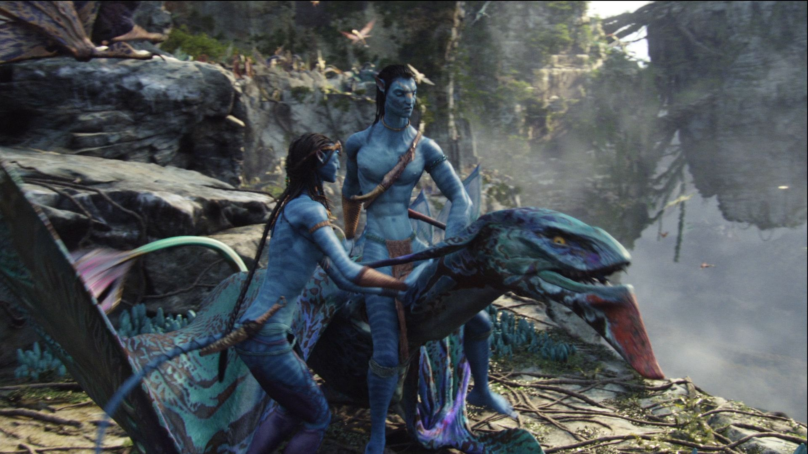
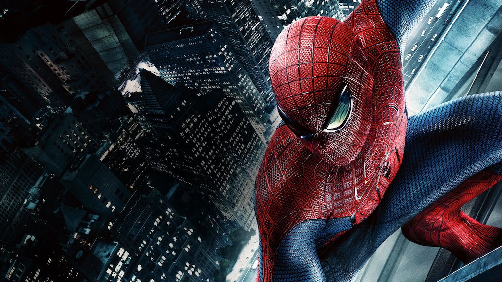

1 / 5

Back to the future
Back to the Future is een sciencefiction-filmtrilogie uit 1985. De tiener Marty is bevriend is met de gekke uitvinder Doc Brown. Doc ontwerpt een tijdmachine waardoor Marty per ongeluk wordt teruggezonden naar 1955. Hij verstoort het verleden en moet dit herstellen, anders zal hij nooit geboren worden.
2 / 5

Interstellar
Interstellar is een Amerikaanse sciencefictionfilm uit 2014. Onze tijd op aarde lijkt voorbij, dus begint een groep ontdekkingsreizigers aan de belangrijkste missie uit de geschiedenis van de mens. Ze gaan op zoek naar een plek in de ruimte waar de mensheid kan voortbestaan.
3 / 5

Jurassic park
Jurassic Park is een Amerikaanse film uit 1993. Wetenschappers slagen er in om dinosauriërs te klonen uit een druppel dino-bloed afkomstig uit een mug. De ondernemende miljonair John Hammond wil de gekloonde dino's aan het publiek laten zien en bouwt daarvoor een gigantisch thema-park.
4 / 5

Avatar
Avatar is een Amerikaanse stereoscopische sciencefictionfilm uit 2009. De marinier Jake heeft een dwarslaesie, maar kan nog steeds onderdeel uitmaken van de missie om de verre maan Pandora te veroveren. Hij raakt echter steeds meer betrokken bij de planeet en haar inheemse bevolking.
5 / 5

The Amazing Spiderman
The Amazing Spider-Man, ook bekend als The Amazing Spider-Man 3D, is een Amerikaanse superheldenfilm uit 2012. De tiener Peter Parker wordt op een dag door een radioactieve spin gebeten en krijgt zo bijzondere krachten. Al snel leert hij de belangrijkste les uit zijn leven: met grote kracht komt grote verantwoordelijkheid.
❮
❯